UDN
Search public documentation:
WhizzleCreationDocumentCH
English Translation
日本語訳
한국어
Interested in the Unreal Engine?
Visit the Unreal Technology site.
Looking for jobs and company info?
Check out the Epic games site.
Questions about support via UDN?
Contact the UDN Staff
日本語訳
한국어
Interested in the Unreal Engine?
Visit the Unreal Technology site.
Looking for jobs and company info?
Check out the Epic games site.
Questions about support via UDN?
Contact the UDN Staff
UDK Home > Whizzle制作文件
Whizzle 制作文件
文档变更记录: Wiki 由 Sungjin Hong 根据 pdf v1.2 进行编写

概述
原型
关卡
在图层中构建关卡，一组相机朝向 "2D" 平面。 通常它大致由 3 个主要图层组成。 前景图层是所有令人激动的游戏过程所存在的地方。 背景由一个蓝色的背景幕布和位于中间的前景几何体的黑色轮廓扩展部分组成。 关卡几何体几乎完全由挤压的形状构成。 这样大大简化了生成关卡的过程。角色
设置
球体碰撞是一个勾选了 'Auto Convex Collision（自动凸面碰撞）' [Collision（碰撞） > Auto Convex Collision（自动凸面碰撞）] 和 'UseSimpleRigidBodyCollision' 的简单球体网格物体。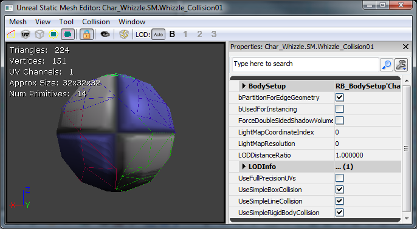
主要角色被设计为大多数为物理控制，并允许玩家进行一小部分操作控制主角在关卡中游览。 由于这个原因，主要角色以名为 AquaBall 的 KActor 子类开始。 这个角色应该以球体形状开始，所以我们通过基础刚体碰撞开始制作一个简单的球体。 在下面看到的可放置标志允许关卡设计师实际将其放置在关卡中。
/*
* Copyright ⓒ 2009 Psyonix Studios. All Rights Reserved.
*
* AquaBall was created to allow for a physics representation of the character in the level
* It's the shape of a sphere, so the ripples in the water will be uniform
* Handles all movement, powers, and events that happen to the player
*/
class AquaBall extends KActorSpawnable
placeable;
DefaultProperties
{
Begin Object Name=StaticMeshComponent0
StaticMesh=StaticMesh'Char_Whizzle.SM.Whizzle_Collision01'
bNotifyRigidBodyCollision=true
HiddenGame=FALSE
ScriptRigidBodyCollisionThreshold=0.001
LightingChannels=(Dynamic=TRUE)
DepthPriorityGroup=SDPG_Foreground
End Object
}
 我们在 Kismet 中完整地设置了相机的第一个迭代。 这是通过在世界中放置面向正X方向的CameraActor，在Kismet中使用 'Level Loaded' （载入关卡）[New Event > Level Loaded], 'Set Camera Target' (设定照相机目标）[New Action > Camera > Set Camera Target], 以及 'Attach to Actor' （贴合到Actor) [New Action > Actor > Attach to Actor]. 请看下图进行设置 照相机现在已经贴合球体了，所以不管这个球体运行到哪个方向，这个照相机也会运行到相同的方向。
我们在 Kismet 中完整地设置了相机的第一个迭代。 这是通过在世界中放置面向正X方向的CameraActor，在Kismet中使用 'Level Loaded' （载入关卡）[New Event > Level Loaded], 'Set Camera Target' (设定照相机目标）[New Action > Camera > Set Camera Target], 以及 'Attach to Actor' （贴合到Actor) [New Action > Actor > Attach to Actor]. 请看下图进行设置 照相机现在已经贴合球体了，所以不管这个球体运行到哪个方向，这个照相机也会运行到相同的方向。
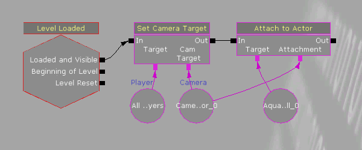
运动
约束 Aqua被设计为2D的透视图，所以自然地限制其运动范围为二轴。 Z是上下轴，Y是左右轴。 为约束AquaBall并确保它不会移向X轴，在PostBeginPlay产生RB_ConstraintActorSpawnable并相应地设置其属性。 传递 'none'到InitConstraint(...) 实际上将球限制在世界内。 因为球体只能在Y和Z轴移动，镜头（在kismet内严格贴合）也将只能在Y和Z轴移动。
// Initialize ball:
// - Constrain the ball to only move on the Y and Z axis
simulated event PostBeginPlay()
{
local RB_ConstraintActor TwoDConstraint;
super.PostBeginPlay();
// Create the constraint in the world by spawning it. Self is used to set the Owner of the constraint to the ball
// We want to Spawn it at the same location as the ball, which is stored in the Location variable and no rotation
TwoDConstraint = Spawn(class'RB_ConstraintActorSpawnable', self, '', Location, rot(0,0,0));
// bLimited is set to 1 by default, so turn it off for Y and Z to allow Y and Z axis movement
TwoDConstraint.ConstraintSetup.LinearYSetup.bLimited = 0;
TwoDConstraint.ConstraintSetup.LinearZSetup.bLimited = 0;
// Don't allow the ball to swing, which would make it move along the X axis
TwoDConstraint.ConstraintSetup.bSwingLimited = true;
// Initialize the constraint and constrain the ball to the world
TwoDConstraint.InitConstraint( self, None );
}
class AquaPlayerController extends AquaPlayerControllerBase;
// The AquaBall that we are controlling
var AquaBall Ball
// This is the default state while playing the game
state ControllingBall
{
// Ignore events that might cause the player to leave this state
ignores SeePlayer, HearNoise, Bump;
// Process Move is called after Player Move in order to actually set the Velocity, we but do this all in AquaBall
function ProcessMove(float DeltaTime, vector NewAccel, eDoubleClickDir DoubleClickMove, rotator DeltaRot);
// Update the player's movement direction
function PlayerMove( float DeltaTime )
{
if (Ball != None)
{
// RawJoyRight and RawJoyUp and the actual values of how much the player is pressing the joystick up, down, left or right
Ball.AxisInput(PlayerInput.RawJoyRight, PlayerInput.RawJoyUp);
}
}
}
// The initial state PlayerController is sent to, send it to our controlling state at the beginning
auto state PlayerWaiting
{
exec function PressStart()
{
}
Begin:
// Wait half a second before going into controlling ball state, so the ball doesn't move around before the player can actually see it
Sleep(0.5f);
Initialize();
GotoState('ControllingBall');
}
class AquaBall extends KActorSpawnable
placeable;
// In value is speed out value is push amount
var() InterpCurveFloat InputPushAmountCurve;
// A multiplier for how much the joystick pushes the player in the Z-axis
var() float InputPushAmountY;
// A multiplier for how much the joystick pushes the player in the Y-axis
var() float InputPushAmountZ;
// Caps input at this level, so it will go from -1 to this threshold
// setting it equal to 0 will mean no up force
var() float InputThresholdZ;
// Y is left and right, Z is up and down.... always between -1 and 1
var vector MovementDirection;
// Called from the PlayerController to set the direction the character should be moving in
simulated event AxisInput(float AxisRight, float AxisUp)
{
MovementDirection.Y = AxisRight;
MovementDirection.Z = AxisUp;
}
// Update the character's push forces every Tick
simulated event Tick(float DT)
{
super.Tick(DT);
// Do Input Push
AddInputForce( DT );
}
// Use the player's input to determine the direction the character should be pushed
simulated function AddInputForce(float DeltaTime)
{
local vector PushVector;
local float InputForceMultiplier;
// If the player is barely holding the joystick, don't allow player to move from that input
// Basically allows for hard coded deadzone
if( VSize(MovementDirection) < 0.2f )
return;
// Change the input force multiplier based on a curve
InputForceMultiplier = EvalInterpCurveFloat( InputPushAmountCurve, VSize(Velocity) );
// Store the actual direction that the ball should move
PushVector = MovementDirection;
// Only allow the player to move up in the Z direction a small amount depending on what InputThresholdZ is set to
PushVector.Z = FMin(InputThresholdZ, PushVector.Z);
// Increase the direction of the push by the multipliers (Constant + Curve)
PushVector.Y *= InputPushAmountY * InputForceMultiplier;
PushVector.Z *= InputPushAmountZ * InputForceMultiplier;
// Actually add the force to the Ball over a few frames
StaticMeshComponent.AddImpulse(PushVector * DeltaTime);
}
DefaultProperties
{
Begin Object Name=StaticMeshComponent0
StaticMesh=StaticMesh'Char_Whizzle.SM.Whizzle_Collision01'
bNotifyRigidBodyCollision=true
HiddenGame=FALSE
ScriptRigidBodyCollisionThreshold=0.001
LightingChannels=(Dynamic=TRUE)
DepthPriorityGroup=SDPG_Foreground
End Object
InputPushAmountY=3000
InputPushAmountZ=2000
InputThresholdZ=0.1f
InputPushAmountCurve=(Points=((InVal=0.0,OutVal=1.0),(InVal=600.0,OutVal=2.00),(InVal=2000,OutVal=6.0f),(InVal=4000,OutVal=16.0f)))
}
// How much gravity should be applied to the ball
// This is done custom because we don't want gravity on everything else
var() float Gravity;
// Update the character's push forces every Tick and rotation
simulated event Tick(float DT)
{
super.Tick(DT);
// Do Gravity
AddGravityForce( DT );
// Do Input Push
AddInputForce( DT );
}
// Add the gravity force
simulated function AddGravityForce(float DeltaTime)
{
// Gravity should always push down so use -1 in the Z axis for pushing down
StaticMeshComponent.AddImpulse(vect(0,0,-1) * Gravity * DeltaTime);
}
DefaultProperties
{
Begin Object Name=StaticMeshComponent0
StaticMesh=StaticMesh'Char_Whizzle.SM.Whizzle_Collision01'
HiddenGame=FALSE
LightingChannels=(Dynamic=TRUE)
DepthPriorityGroup=SDPG_Foreground
End Object
Gravity=3500
InputPushAmountY=3000
InputPushAmountZ=2000
InputThresholdZ=0.1f
InputPushAmountCurve=(Points=((InVal=0.0,OutVal=1.0),(InVal=600.0,OutVal=2.00),(InVal=2000,OutVal=6.0f),(InVal=4000,OutVal=16.0f)))
}
游戏制作原理
设置地图来开始 开始先设置您的自定义地图，而这只需在DefaultEngine.ini中改变一些变量。 最主要的使用的是LocalMap，所以改变它的值来使用您的地图文件名：[Configuration] BasedOn=..\Engine\Config\BaseEngine.ini [URL] MapExt=ut3 Map=Default.ut3 LocalMap=Level01.ut3 TransitionMap=Default.ut3 EXEName=UTGame.exe DebugEXEName=DEBUG-UTGame.exe GameName=Unreal Tournament 3 GameNameShort=UT3
/*
* Copyright ⓒ 2009 Psyonix Studios. All Rights Reserved.
*/
class AquaGame extends GameInfo;
DefaultProperties
{
// Make sure to specify the package name before the class name
PlayerControllerClass=class'AquaGame.AquaPlayerController'
}
[Configuration] BasedOn=..\Engine\Config\BaseGame.ini [Engine.GameInfo] DefaultGame=AquaGame.AquaMenuGame DefaultServerGame=AquaGame.AquaMenuGame PlayerControllerClassName=AquaGame.AquaPlayerController

特效
一开始，我们设计游戏的卖点是游戏时在水下进行的。 到目前为止，在我们创建的世界里没有泡泡，所以让我们为玩家增加泡泡轨迹。 First we need our bubble material. 右键点击内容浏览器并创建材质。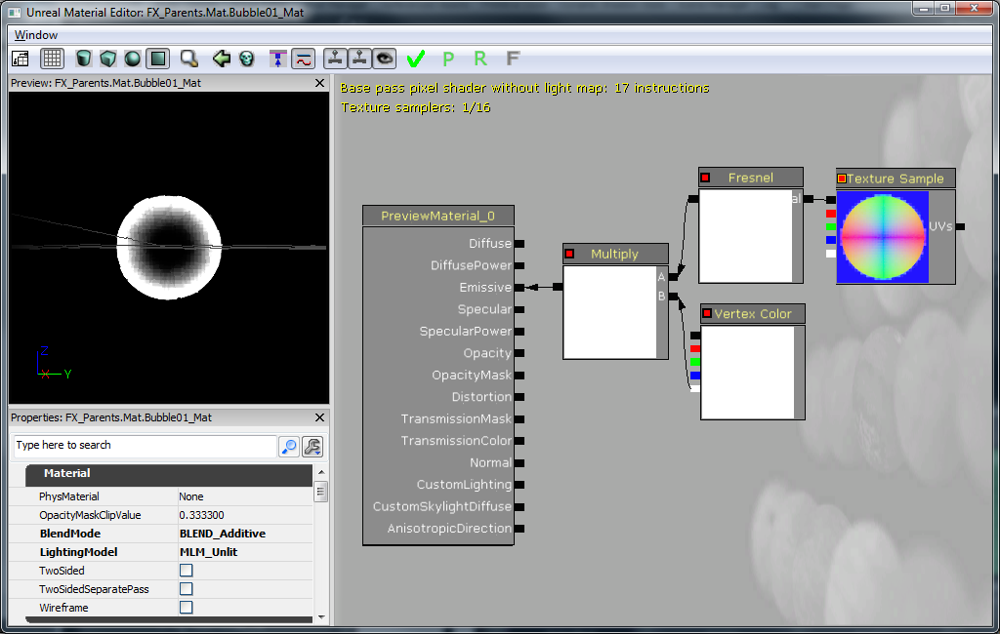
所以这是创建泡泡的一个更为复杂的途径。 当然您可以很好地对泡泡贴图上色，然而，我已经有了很好的"sphere" 法线贴图，所以不要浪费时间（和贴图内存），为什么不这样创建泡泡呢？ 下面就是在图上操作的方法： 'Texture Sample' （贴图样本）是我们的 "sphere" 法线贴图。 RGB部分（黑色输出）传递到'Fresnel' 来达到光晕效果。 'Fresnel'随后和'Vertex Color'的alpha一起传送到'Multiply'。我们目前使用'Vertex Color'用于我们的泡泡轨迹粒子系统用来按需淡入淡出泡泡。该 'Multiply' 装入材质的'Emissive'输入。'BlendMode'被设置为'BLEND_Additive'，这样我们不必输入任何东西进'Opacity'来让泡泡半透明。 在效果上，'Emissive'用来控制我们的颜色和不透明度。 最终，'LightingModel'被设置为'MLM_Unlit'，因为我们不需要（或想要）泡泡接受光照。 所以我们在粒子系统里有合适的材质供使用。 再次右键点击内容浏览器并增加粒子系统。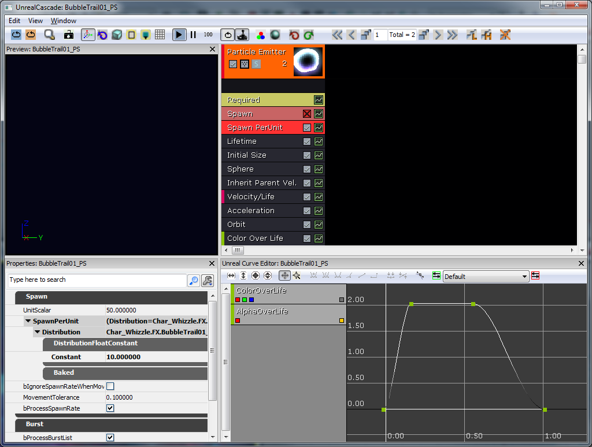
所以我想要泡泡的尾迹以任何给出的速度在球体外生成。 默认情况下，粒子系统使用固定的生成率。 我选择使用替代的'Spawn PerUnit'模块。 基本上，这会在粒子系统穿行的每X数量的单位里生成1个粒子（这个例子里为10） 这可以预防基于玩家的运动速度的生成率过高或过低。 让我们顺序查看接下来的模块：- Lifetime （生命周期） - 1-2秒
- Initial Size （初始尺寸） - 6-20（仅需设置X因为它们统一缩放）
- Sphere （球体）- 'StartRadius' （开始半径） 为8，'Velocity' （速度）设置为true,'VelocityScale' （速度范围）为16.这会将泡泡在8单位的半径内生成并将它们向外侧推。
- Inherit Parent Velocity （父速度继承）- - X, Y和Z都为0.25。这将占据玩家世界的速度并将此乘以负0.25，这样泡泡看起来是飞向玩家。
- Velocity/Life （速度/生命）- 这是曲线。 X 和 Y值在时间从0到0.5时，从1提升到0.25. Z值保持为1. 这减缓了所有的水平运动。
- Acceleration (加速） -Z被设置为200.这使得泡泡升起（它们应该如此！）
- Orbit (轨道）- 'OffsetAmount' （偏移量） Y 为0-48, 'RotationRateAmount' （旋转速度量）X 为-1 到 1。这使得泡泡的运动轨迹飘忽不定。
- Color Over Life （生命期间内的颜色）- 如曲线编辑器中所示，Alpha值从0升到1再回到0，颜色是不产生影响的。
Begin Object Class=ParticleSystemComponent Name=Bubbles
bAutoActivate=true
Template=ParticleSystem'Char_Whizzle.FX.BubbleTrail01_PS'
End Object
Components.Add(Bubbles)
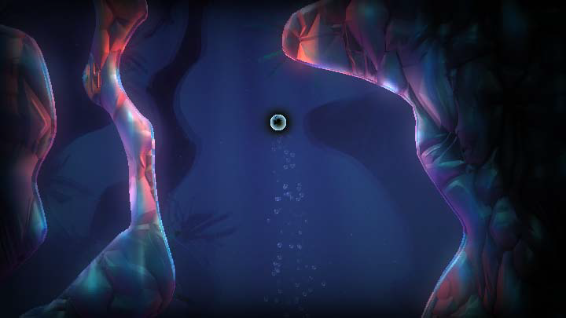
为进一步突出水下主题，我们使用FluidSurfaceActor。 我们只需很小的努力即可达到如下所示的美丽的水波纹效果。 加上泡泡尾迹效果，我们得到了非常令人信服的水环境。 最终，bAllowFluidSurfaceInteraction在AquaBall上设置为ture,所以它将与FluidSurfaceActor互动（这是造成球体移动带出波纹的原因） 对于Actor子类，它默认被设置为true。 在角色的第一次传递后，有一些是这样的：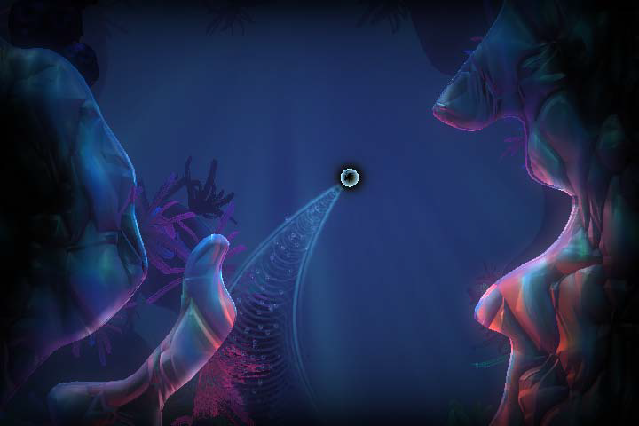
实现
可视角色
设置
Whizzle的角色在3ds Max中创建并组装。骨架设置同一般情况一样，把所有的骨骼作为1根根骨骼的子项，然后角色植皮到必要的骨骼中。 骨架和网格随后被导入特有格式，PSK，使用Epic插件"ActorX" (UDN的ActorX). 这样做需要设置输出路径，文件名和必要的标志。 在Whizzle这个例子里，打开的标志为：- All skin-types(所有的皮肤类型)
- Bake smoothing groups (烘焙平滑组）
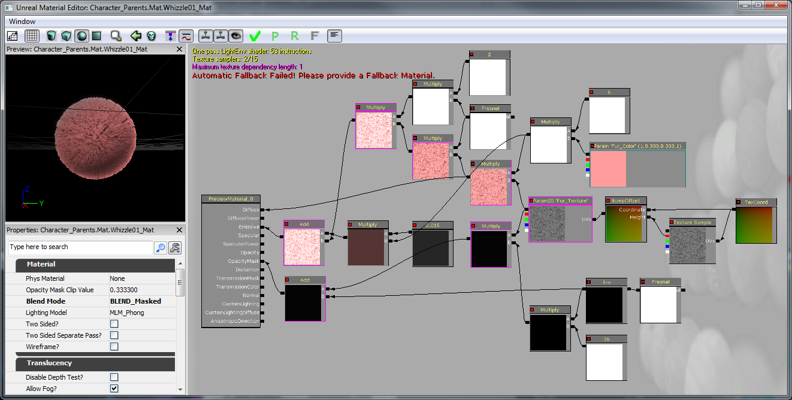
现在游戏缺失可辨识的角色模型，所以必须被加入AquaBall。 这个模型(Whizzle)为骨骼网格，这样可支持动画效果。 骨骼网格的多边形也比在碰撞中所应使用的多边形更复杂，所以AquaBall将继续作物理互动的主要对象。 然而，角色建模应该继承AquaBall的物理性，这样可以在创建了AquaBall后，角色建模可以作为KAssetSpawnable (AquaCharacter) 的子类来创立和附加。 确保所有 AquaCharacter的骨骼网格组件的阻挡和碰撞标识被设置为false。
class AquaCharacter extends KAssetSpawnable
placeable;
DefaultProperties
{
BlockRigidBody=false
Begin Object Name=MyLightEnvironment
bEnabled=false
End Object
Begin Object Name=KAssetSkelMeshComponent
Animations=None
// Set up the Skeletal mesh reference
SkeletalMesh=SkeletalMesh'Char_Whizzle.SK.Wizzle01_SK'
// Add any anim sets and anim trees for later use
AnimSets.Add(AnimSet'Char_Whizzle.SK.Whizzle01_Animset')
PhysicsAsset=PhysicsAsset'Char_Whizzle.SK.Wizzle01_Physics'
AnimTreeTemplate=AnimTree'Char_Whizzle.SK.Whizzle01_Animtree'
MorphSets(0)=MorphTargetSet'Char_Whizzle.SK.Whizzle01_MorphSet'
// If the character has a Physics Asset, make sure to set this to true
bHasPhysicsAssetInstance=true
bUpdateKinematicBonesFromAnimation=true
bUpdateJointsFromAnimation=true
// Use 0 physics weight, so the character is completely moved by animation
PhysicsWeight=0.0f
// Collision flags that should all be set to false, so the skeletal mesh should not collide with anything
BlockRigidBody=false
CollideActors=false
BlockActors=false
BlockZeroExtent=false
BlockNonZeroExtent=false
RBChannel=RBCC_GameplayPhysics
RBCollideWithChannels=(Default=true,BlockingVolume=true,EffectPhysics=true,GameplayPhysics=true)
// Set a high RBDominanceGroup so the AquaBall can pull the AquaCharacter, but the AquaCharacter can't have any physics pulling on the Ball
RBDominanceGroup=30
// Set the character to show up in the foreground by default
DepthPriorityGroup=SDPG_Foreground
LightingChannels=(Dynamic=TRUE,Gameplay_1=TRUE)
Rotation=(Yaw=0)
End Object
}
附加 AquaCharacter于AquaBall
生成AquaBall的PostBeginPlay() 内的AquaCharacter。 为将AquaCharacter附加到AquaBall使用另外的RB_ConstraintActorSpawnable。 一定要使用InitConstraint(...) ，这次在球体和角色之间使用并指定附着的骨骼。 现在在AquaBall的StaticMeshComponent内设置HiddenGame=TRUE，这样AquaBall的网格不再能看到（不要将此与实际角色网格产生干扰）
// The character that is attached to this ball (the actual Fizzle you see on the screen)
// Store this reference for use later for playing animations and such
var AquaCharacter Character;
// Initialize ball:
// - Constrain the ball to only move on the Y and Z axis
// - Spawn the visible character
simulated event PostBeginPlay()
{
local RB_ConstraintActor TwoDConstraint;
super.PostBeginPlay();
TwoDConstraint = Spawn(class'RB_ConstraintActorSpawnable', self, '', Location, rot(0,0,0));
TwoDConstraint.ConstraintSetup.LinearYSetup.bLimited = 0;
TwoDConstraint.ConstraintSetup.LinearZSetup.bLimited = 0;
TwoDConstraint.ConstraintSetup.bSwingLimited = true;
TwoDConstraint.InitConstraint( self, None );
SpawnCharacter();
}
// Spawn the visible character mesh that can be seen
// Constrain the character to the ball so he's always upright
simulated function SpawnCharacter()
{
local RB_ConstraintActor CharacterConstraint;
// Specify the AquaCharacter class to spawn and spawn it at the AquaBall's location with no rotation
Character = Spawn(class'AquaCharacter', self, '', Location, rot(0,0,0));
// we want character to be in a 2 : 1.5 ratio to this collision
Character.SetDrawScale(DrawScale * 1.33333f);
// Spawn the Constraint to the ball
CharacterConstraint = Spawn(class'RB_ConstraintActorSpawnable', self, '', Location);
// Don't allow any twisting around, we will handle rotation manually later on if we want the character to rotate while moving
CharacterConstraint.ConstraintSetup.bSwingLimited = true;
CharacterConstraint.ConstraintSetup.bTwistLimited = true;
// Initialize the constraint between the character and the AquaBall on the bone 'b_Head'
CharacterConstraint.InitConstraint(Character, self, 'b_Head');
}
DefaultProperties
{
Begin Object Name=StaticMeshComponent0
StaticMesh=StaticMesh'Char_Whizzle.SM.Whizzle_Collision01'
// Hide the Ball mesh now because only the AquaCharacter's skeletal mesh should be visible
HiddenGame=TRUE
LightingChannels=(Dynamic=TRUE)
DepthPriorityGroup=SDPG_Foreground
End Object
}

动画
现在我们有了角色，我们需要给他注入生命！ 所有的在3ds Max中创建的动画都是用我们先前导出的同样的网格和骨骼。 当动画完成后，它将通过ActorX被导出。 通过 ActorX导出动画将给我们 .PSA文件。 在编辑器中，我们打开Whizzle网格并为此从文件菜单中创建新的AnimSet (AnimSet用户指南) AnimSet会被用来为此角色存放所有的动画。 在此之后，我们把所有的 .PSA文件导入进AnimSet. 让动画填充AnimSet使得我们可以继续做AnimTree（AnimTree用户指南） 我们希望自己的角色根据他在世界内的互动而尽可能地栩栩如生并且从一个动作到另一个地混合。 AnimTree被创立，这样默认情况下，总是会播放空闲的动画，并且细分的AnimNodeBlend会播放另一段动画。 一些动画，比如"Fizzle_Struggle"被设立为循环动画，另一些被设置为使用"bCauseActorAnimEnd" 标记仅播放一次。 混合的节点名称允许播放合适的事件时通过代码调用动画。 角色主要面对摄像头，但是我们希望玩家控制自己的移动的能力能达到一定的程度。 为此我们在AnimTree 开始处增加了AnimNodeAimOffset，这样我们可以旋转根部骨骼并让Whizzle面向玩家指引其运动的方向。
被捕获的Fizzle
主要游戏类型将设定主要目标为释放被捕获的Fizzle。 所以首先，一些被捕获的Fizzle将需要被创建。 为了释放它们，玩家需要冲入它们的牢房并打破以使Fizzle能出来。 为了得到很酷的冲击效果，我们将使用FracturedStaticMeshActor子类。 首先我们为了内容需要使用FracturedStaticMesh。 破裂的网格被从碰撞的静态网格中创建。 一个简单的笼子被建模并被作为.ASE文件导入UE3 。 打开编辑器内的静态网格，我们应用了一个6DOP简化的碰撞（基本的盒体碰撞）并点击"Fracture Tool"（碎片工具）按钮。 笼子在屏幕上很小，所以我们不想要很多碎片，我们设置碎片数量为8.其余全用默认值。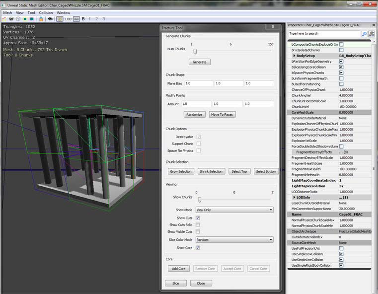
在游戏中稍后还有其他此类的可破坏物体，所以应该创建超级类，名字为AquaFractureMeshActor。 我们假设基本函数功能为通过调用一个事件将任何能打破的东西被打破，而这将造成所有网格被打破。 其他类可以调用事件BreakBarrier(...) 来打破 Fizzle的笼子。 另外，覆盖Explode()函数将允许关掉默认的碰撞通道。 打开则会让碎片呈现为不可靠及疯狂的方式碎裂。 然而，为了做到这个，我们必须复制整个函数，因为引擎并不能获知所有生成的每个部分的属性设置。 另外，确保 Explode() 只能被调用一次。 最终，当物体爆炸，关闭其碰撞，因为默认设置下并不会发生。
/*
* Copyright ⓒ 2009 Psyonix Studios. All Rights Reserved.
*/
class AquaFractureMeshActor extends FracturedStaticMeshActor;
var bool bExploded;
var AquaPlayerController PlayerThatHitMe;
// A simple way to make sure this barrier gets broken on the first hit
event BreakBarrier( Controller EventInstigator, vector HitNormal )
{
// Store the player that broke this Mesh for use in subclasses
PlayerThatHitMe = AquaPlayerController(EventInstigator);
Explode();
}
// Make sure explode only happens once
// Also set the lighting channel of the parts
simulated event Explode()
{
local array<byte> FragmentVis;
local int i;
local vector SpawnDir;
local FracturedStaticMesh FracMesh;
local FracturedStaticMeshPart FracPart;
local float PartScale;
local ParticleSystem EffectPSys;
// Don't allow explode to be called more than once
if(bExploded)
return;
bExploded = true;
FracMesh = FracturedStaticMesh(FracturedStaticMeshComponent.StaticMesh);
// Particle Systems
// Look for override first
if(OverrideFragmentDestroyEffects.length > 0)
{
// Pick randomly
EffectPSys = OverrideFragmentDestroyEffects[Rand(OverrideFragmentDestroyEffects.length)];
}
// No override array, try the mesh
else if(FracMesh.FragmentDestroyEffects.length > 0)
{
EffectPSys = FracMesh.FragmentDestroyEffects[Rand(FracMesh.FragmentDestroyEffects.length)];
}
// Spawn emitter in the emitter pool
WorldInfo.MyEmitterPool.SpawnEmitter(EffectPSys, Location);
// Iterate over all visible fragments spawning them
FragmentVis = FracturedStaticMeshComponent.GetVisibleFragments();
for(i=0; i<FragmentVis.length; i++)
{
// If this is a currently-visible, non-core fragment, spawn it off.
if((FragmentVis[i] != 0) && (i != FracturedStaticMeshComponent.GetCoreFragmentIndex()))
{
SpawnDir = FracturedStaticMeshComponent.GetFragmentAverageExteriorNormal(i);
PartScale = FracMesh.ExplosionPhysicsChunkScaleMin + FRand() * (FracMesh.ExplosionPhysicsChunkScaleMax - FracMesh.ExplosionPhysicsChunkScaleMin);
// Spawn part- inherit this actors velocity
FracPart = SpawnPart(i, (0.5 * SpawnDir * FracMesh.ChunkLinVel) + Velocity, 0.5 * VRand() * FracMesh.ChunkAngVel, PartScale, TRUE);
if(FracPart != None)
{
// When something explodes we disallow collisions between all those parts.
FracPart.FracturedStaticMeshComponent.SetRBCollidesWithChannel(RBCC_FracturedMeshPart, FALSE);
// Disallow collisions of the Default collision channel too, so the parts don't go crazy
FracPart.FracturedStaticMeshComponent.SetRBCollidesWithChannel(RBCC_Default, FALSE);
}
FragmentVis[i] = 0;
}
}
// Update the visibility of the actor being spawned off of
FracturedStaticMeshComponent.SetVisibleFragments(FragmentVis);
// Turn off the collision to make sure the player doesn't hit invisible walls
TurnOffCollision();
}
function TurnOffCollision()
{
// Turn off physics
SetPhysics(PHYS_None);
// Turn off Collide and Blocking flags
SetCollision(false, false, false);
// Don't allow blocking rigid body
if (CollisionComponent != None)
{
CollisionComponent.SetBlockRigidBody(false);
}
// Call event that sub classes will use to notify that the mesh is completely broken
OnFractureMeshBroken();
}
// override in sub classes
function OnFractureMeshBroken()
{
Destroy();
}
DefaultProperties
{
bWorldGeometry=FALSE
}
/*
* Copyright ⓒ 2009 Psyonix Studios. All Rights Reserved.
*/
class BreakableCageAndFizzle extends AquaFractureMeshActor
placeable;
DefaultProperties
{
Begin Object Name=FracturedStaticMeshComponent0
StaticMesh=FracturedStaticMesh'Char_CagedWhizzle.SM.Cage01_FRAC'
End Object
DrawScale=1.5f
}
收集
GameInfo的子类将会是最佳的判断游戏是否胜利的工具(FizzleCollectionGame). 在PostBeginPlay()，循环所有的DynamicActor来计算游戏中BreakableCageAndFizzles的数量。 在 AquaGameReplicationInfo中设置游戏中所留的所有Fizzle数量。 制作该类的原因是如果我们需要游戏能联网，我们的主要游戏状态变量能在正确的类中。 不管Fizzle是否被收集，调用FizzleCollected(...) 将能计算出游戏中有多少Fizzle。
// how many Fizzles are left in the game?
var int NumberOfFizzles;
// Initialize the amount of fizzles in the game
event PostBeginPlay()
{
Super.PostBeginPlay();
CountFizzles();
}
// Count the number of fizzles in the level, so the player
// knows what the goal is, when we have the number, initialize the other variables
function CountFizzles()
{
local BreakableCageAndFizzle P;
foreach WorldInfo.DynamicActors(class'BreakableCageAndFizzle', P)
{
// Count the number of Fizzles
NumberOfFizzles++;
}
// Make the Number of Fizzles data available in the GameReplicationInfo
AquaGameReplicationInfo(GameReplicationInfo).NumberOfFizzlesRemaining = NumberOfFizzles;
if(NumberOfFizzles < 1)
{
// If the level isn't loaded yet, there would be no BreakableCageAndFizzle actors, so check again after a short amount of time
SetTimer(0.3f, false,'CountFizzles');
}
}
// Called whenever a Fizzle has been set free
// Update the remaining number of fizzles and end the game if there's none left
function FizzleCollected(AquaPlayerController inPlayer)
{
// Decrease the amount of Fizzles left to be freed
NumberOfFizzles--;
// Make sure to keep the GameReplicationInfo up to date
AquaGameReplicationInfo(GameReplicationInfo).NumberOfFizzlesRemaining = NumberOfFizzles;
// If there are no Fizzles left, end the game
if(NumberOfFizzles <= 0)
{
EndGame( inPlayer.PlayerReplicationInfo, "You Won!");
}
}
// When the cage is broken, we want to play animations on the Fizzle
// And set it free
// Also update game info to record one saved
function OnFractureMeshBroken()
{
// Tell the GameInfo to update the amount of remaining Fizzles
FizzleCollectionGame(WorldInfo.Game).FizzleCollected(PlayerThatHitMe);
// Tell the player that a Fizzle was collected. Useful for later when we have a HUD
PlayerThatHitMe.SetFizzleAmount( );
}
结束
当游戏中没有Fizzle时，调用EndGame(...) 使游戏成为结束状态。 当游戏结束时，设置AquaGameReplicationInfo.bGameOver为true，并且在1.5秒后，AquaGameReplicationInfo.bMatchIsOver被设置为true。 这两个变量将使得游戏结束时有特殊处理，比如显示结束游戏HUD并在游戏结束时定住主角。
// Handle what to do when the game is over, if we won then set up the proper variable
function EndGame( PlayerReplicationInfo Winner, string Reason )
{
if(bGameEnded)
return;
// don't end game if not really ready
if ( !CheckEndGame(Winner, Reason) )
{
bOverTime = true;
return;
}
// This flag will be used to start the game over sequence
AquaGameReplicationInfo(GameReplicationInfo).bGameOver = true;
if(Reason ~= "You Won!")
{
// Setting this flag will allow us to know that the game was actually won
AquaGameReplicationInfo(GameReplicationInfo).bWonGame = true;
}
// Allow replication to happen before reporting scores, stats, etc.
SetTimer( 1.5,false,nameof(PerformEndGameHandling) );
bGameEnded = true;
EndLogging(Reason);
}
能力
目前，目标为打破Fizzle的笼子，但是没办法打破它们！ 这就是玩家特殊能力大显身手的时刻。在AquaBall增加特殊函数来给出Super Squirt（超级喷射）的初始阶段能力。 这将会让角色根据玩家摇杆所指的任意方向喷射。 当角色撞击到任何东西，我们可以看一下附近有无任何BreakableCageAndFizzle actors可撞破！ 当 AquaBall 撞入任何阻碍刚体的东西时（比如游戏世界或笼子），事件RigidBodyCollision(...)被调用。 当RigidBodyCollision(...)被调用，我们应该要实行爆炸分解（SuperSquirtExplodePower() ), 这会让任何附近的BreakableCageAndFizzles被撞破。 RigidBodyCollision(...)仅当我们在AquaBall得StaticMeshComponent设立两个变量后被调用。 设置bNotifyRigidBodyCollision为ture,并把ScriptRigidBodyCollisionThreshold的值设置大于0. ExplodePower() 函数使用了BarrierCache，而此函数是建立在InitializeVariables()之上。 这使得我们节约了计算时间，这样我们不必再每次使用爆炸分解时去搜索整个DynamicActors。
// Have a cache of all barriers in the level so we don't use a lot of computing time searching each time we explode
var array<AquaFractureMeshActor> BarrierCache;
// True if we are currently super squirting and can explode when we hit a wall
var bool bCanExplode;
// Multiplier for the amount of force to use for Super Squirt power
var() float SuperSquirtForceMax;
simulated function SuperSquirt()
{
local vector Direction;
// Use the cached direction that the player was pointing with the joystick
Direction = MovementDirection;
// Make sure the player stops movement before giving big boost, so the player can't reach an extremely high speed and get out of the level
StaticMeshComponent.SetRBLinearVelocity(vect(0,0,0));
// Add the Impulse to the character in the Direction with a magnitude of SuperSquirtForceMax
StaticMeshComponent.AddImpulse( Direction * SuperSquirtForceMax,,,true );
// turn on exploding flag, so we only explode once per SquirtSquirt
bCanExplode = true;
}
// If we can explode and we hit something, then do the explode power
simulated event RigidBodyCollision(PrimitiveComponent HitComponent, PrimitiveComponent OtherComponent, const out CollisionImpactData RigidCollisionData, int ContactIndex)
{
Super.RigidBodyCollision( HitComponent, OtherComponent, RigidCollisionData, ContactIndex);
// Do a sanity check here to make sure the thing we're hitting actually has a component
if(OtherComponent != none)
{
// Only allow exploding to happen once
if(bCanExplode)
{
bCanExplode = false;
// Start the explode power!
ExplodePower();
}
}
}
// The exploding power after Super Squirting to break barriers around us
simulated function ExplodePower()
{
local AquaFractureMeshActor Barrier;
foreach BarrierCache( Barrier )
{
if(Barrier == none)
continue;
if( VSize(Location - Barrier.Location) < ExplodePowerRange )
{
Barrier.BreakBarrier( MyController, Normal( Location - Barrier.Location ) );
}
}
}
// Initialize any variables that we might need for later
// This is called right before the ball is registered for input
// So a good place to look for objects in the level
simulated function InitializeVariables()
{
local AquaFractureMeshActor Barrier;
foreach WorldInfo.DynamicActors( class'AquaFractureMeshActor', Barrier)
{
BarrierCache.AddItem( Barrier );
}
}
DefaultProperties
{
Begin Object Name=StaticMeshComponent0
StaticMesh=StaticMesh'Char_Whizzle.SM.Whizzle_Collision01'
// Turn on Rigid Body Collision notifications
bNotifyRigidBodyCollision=true
HiddenGame=TRUE
// Any Rigid Body Collision with a force above 0.001 will cause RigidBodyCollision(...) to be called
ScriptRigidBodyCollisionThreshold=0.001
LightingChannels=(Dynamic=TRUE)
DepthPriorityGroup=SDPG_Foreground
End Object
}
润色
空气
为使游戏有一些挑战性，玩家在每次使用Super Squirt（超级喷射）能力时都会损失空气，玩家捡到空气气泡则会补充空气。 捡起一件物体能接触，但不阻碍KActor实际上是非常需要技巧的。 我们将会创建一个叫AquaPickupable的类来处理任何需要进行此动作的对象，比如气泡。 AquaPickupable中使用的主要函数为Touch(...)， 此函数应包含一些捡起特效的函数功能以及在AquaPlayerController类中调用事件，来使玩家在捡起东西后知道如何处理。
/*
* Copyright ⓒ 2009 Psyonix Studios. All Rights Reserved.
*
* An abstract class for things that the player can pick up
* They should be Static Meshes and not block the player
*/
class AquaPickupable extends DynamicSMActor_Spawnable
abstract;
// true if the object has been picked up already
var bool bPickedUp;
// The effect to play when the object is picked up
var ParticleSystemComponent PickupEffect;
// The AquaBall that picked us up
var AquaBall BallToucher;
// True if we should play the PickupEffect on touch, otherwise it should be handled custom
var bool bPlayEffectOnTouch;
// When the Pickupable is touched by the player, play the pick up effect and call subclassable OnPickup()
// Make sure it can only be picked up once with bPickedUp
event Touch( Actor Other, PrimitiveComponent OtherComp, vector HitLocation, vector HitNormal )
{
if(!bPickedUp && AquaBall(Other) != none)
{
Super.Touch(Other, OtherComp, HitLocation, HitNormal);
bPickedUp = true;
BallToucher = AquaBall(Other);
if(bPlayEffectOnTouch)
PlayPickupEffect(AquaBall(Other));
OnPickup(AquaBall(Other).MyController);
}
}
// overwrite this in subclasses
function OnPickup(AquaPlayerController Player);
// Plays the pickup effect and destroys the pickupable
function PlayPickupEffect(AquaBall Ball)
{
if(PickupEffect != none)
{
PickupEffect.ActivateSystem();
}
Destroy();
}
DefaultProperties
{
Begin Object Class=ParticleSystemComponent Name=PickupEffect0
bAutoActivate=false
DepthPriorityGroup=SDPG_Foreground
End Object
PickupEffect=PickupEffect0
Components.Add(PickupEffect0)
bPlayEffectOnTouch=true
}
DefaultProperties
{
bBlockActors=true
bCollideActors=true
bStatic=false
bWorldGeometry=false
Physics=PHYS_None
bNoEncroachCheck=false
Begin Object Name=StaticMeshComponent0
CollideActors=TRUE
BlockActors=FALSE
BlockRigidBody=FALSE
BlockZeroExtent=TRUE
BlockNonZeroExtent=TRUE
RBCollideWithChannels=(Default=TRUE,BlockingVolume=TRUE,GameplayPhysics=TRUE,EffectPhysics=TRUE,FracturedMeshPart=FALSE)
End Object
}
DefaultProperties
{
// The main static mesh that is used to detect collision with Rigid Body Physics objects
Begin Object Name=StaticMeshComponent0
StaticMesh=StaticMesh'Char_Whizzle.SM.Whizzle_Collision01'
bNotifyRigidBodyCollision=true
HiddenGame=TRUE
ScriptRigidBodyCollisionThreshold=0.001
LightingChannels=(Dynamic=TRUE)
DepthPriorityGroup=SDPG_Foreground
End Object
// This collision object is used to get a touch event from the air and other pickupables
Begin Object Class=StaticMeshComponent Name=StaticMeshComponent1
StaticMesh=StaticMesh'Char_Whizzle.SM.Whizzle_Collision01'
// Make sure it's hidden like our other one
HiddenGame=TRUE
// We only want to collide with actors for touch, don't use Block
CollideActors=TRUE
BlockActors=FALSE
// We have to always check collision on this collision component, so it actually checks for touches
AlwaysCheckCollision=TRUE
RBCollideWithChannels=(Default=TRUE,BlockingVolume=TRUE,GameplayPhysics=TRUE,EffectPhysics=TRUE,FracturedMeshPart=FALSE)
End Object
Components.Add(StaticMeshComponent1)
}
 在碰撞时使用和 fizzle一样的网格，因为我们希望它是圆的。 作为设计时的决定，泡泡将只会由面向玩家的粒子系统来做描绘。 所以碰撞的StaticMesh（静态网格）应该被隐藏。 另外，一般泡泡会在水面漂动，所以我们要写一些代码来模拟这种情况。 浮起来的基本想法是让泡泡在浮起来的同时慢慢左右移动。 另外，确保它不会浮得离它漂起来的地方太远，这样它会来回漂摆呈之字形向上。
在碰撞时使用和 fizzle一样的网格，因为我们希望它是圆的。 作为设计时的决定，泡泡将只会由面向玩家的粒子系统来做描绘。 所以碰撞的StaticMesh（静态网格）应该被隐藏。 另外，一般泡泡会在水面漂动，所以我们要写一些代码来模拟这种情况。 浮起来的基本想法是让泡泡在浮起来的同时慢慢左右移动。 另外，确保它不会浮得离它漂起来的地方太远，这样它会来回漂摆呈之字形向上。
/*
* Copyright ⓒ 2009 Psyonix Studios. All Rights Reserved.
*/
class AirBubble extends AquaPickupable
placeable;
// The amount of air that is given to the player when picked up
var() float AirAmount;
// The velocity that the bubble should drift in after spawning Modified in Tick to change direction
var vector FloatingSpeed;
// The initial location the bubble was spawned at, used to make sure the bubble doesn't drift too far away
var vector OriginalLocation;
// The maximum distance on the Y-axis that the bubble can float away from the OriginalLocation
var float MaxHorizontalFloatDistance;
// A multiplier for which direction the bubble is floating now either 1 or -1
var float CurrentDirection;
// When picked up by Player do the following:
// - Make character play chomping animation
function OnPickup(AquaPlayerController Player)
{
// Call event to play animation for eating the bubble
BallToucher.PlayGotAir();
// Give air to the player
Player.GotAir(AirAmount);
}
// Tick handles the movement of the bubble in the following situations:
// - If the bubble has been picked up, move it closer to the player's mouth
// - By default float up towards the top of the map while drifting left and right
simulated event Tick(float DeltaTime)
{
local vector NewLocation;
local float DistanceFromCenter;
Super.Tick(DeltaTime);
// Update the new location with the new direction we should be floating in
NewLocation = Location;
NewLocation.Z += FloatingSpeed.Z * DeltaTime;
NewLocation.Y += FloatingSpeed.Y * DeltaTime;
// Make sure it doesn't go farther than the max distance away from the Original Location
NewLocation.Y = FClamp(NewLocation.Y, OriginalLocation.Y - MaxHorizontalFloatDistance, OriginalLocation.Y + MaxHorizontalFloatDistance);
// Actually set the location of the Air Bubble
SetLocation(NewLocation);
// Update the speed based on the distance from the center, so it slows down the farther away it is from the original location
DistanceFromCenter = Abs(NewLocation.Y - OriginalLocation.Y) / MaxHorizontalFloatDistance;
FloatingSpeed.Y = FClamp((1 - DistanceFromCenter) * default.FloatingSpeed.Y, 20, default.FloatingSpeed.Y);
// Make sure to switch directions when we reach the left or right boundary
if(Abs(NewLocation.Y - OriginalLocation.Y) >= MaxHorizontalFloatDistance)
{
CurrentDirection *= -1;
}
FloatingSpeed.Y *= CurrentDirection;
}
// Initialize variables and allow for random movement speed
simulated event PostBeginPlay()
{
Super.PostBeginPlay();
// Use to make sure we don't get too far away from the original location
OriginalLocation = Location;
// each bubble should be a random speed, so they don't look like they are all doing the same thing
FloatingSpeed.Z = FRand() * 40 + FloatingSpeed.Z;
// Randomize both axes speeds
FloatingSpeed.Y = FRand() * 25 + FloatingSpeed.Y;
}
DefaultProperties
{
// Collision mesh
Begin Object Name=StaticMeshComponent0
StaticMesh=StaticMesh'Char_Whizzle.SM.Whizzle_Collision01'
HiddenGame=TRUE
Scale=2.4f
End Object
// Bubble effect (the actual visual that you see)
Begin Object Class=ParticleSystemComponent Name=BubbleEffect
bAutoActivate=true
Template=ParticleSystem'Pickup_Bubble.FX.Bubble01_PS'
DepthPriorityGroup=SDPG_Foreground
TranslucencySortPriority=1
End Object
Components.Add(BubbleEffect)
// Don't play any effect wh
PickupEffect=none
CurrentDirection=1
DrawScale=1.5f
MaxHorizontalFloatDistance=100
FloatingSpeed=(Z=120,Y=100)
bPlayEffectOnTouch=false
}
水母
水母被加入以制造跳跃的额外的有趣游戏机制,但当它们击中水母底部时也会产生风险,它们会被定住。 水母一开始仅是带网格的粒子系统以供碰撞。 此后，它被改变为使用SkeletalMesh来作视觉效果，所以我们能够在它被玩家击中后播放压扁效果。 水母的粒子是由大的橘黄色火花生成的发光体，一个蓝色的电击及尾迹发射器生成的8个触角和增加声音的随机速度所生成。 使用StaticMeshComponent作为碰撞并且为之开启RigidBodyCollision事件，这样让角色从水母反弹使非常容易的。 当RigidBodyCollision(...)被调用，找出玩家弹出的方向，然后增加作用于玩家的StaticMeshComponent的推力。
使用StaticMeshComponent作为碰撞并且为之开启RigidBodyCollision事件，这样让角色从水母反弹使非常容易的。 当RigidBodyCollision(...)被调用，找出玩家弹出的方向，然后增加作用于玩家的StaticMeshComponent的推力。
/*
* Copyright ⓒ 2009 Psyonix Studios. All Rights Reserved.
*/
class JellyFishBase extends StaticMeshActorSpawnable
placeable;
// Multiplier for the amount of force given to the player when it hits the jellyfish
var() float BounceForce;
// if Hitting the player, handle electrocution and bouncing the player off
simulated event RigidBodyCollision(PrimitiveComponent HitComponent, PrimitiveComponent OtherComponent, const out CollisionImpactData RigidCollisionData, int ContactIndex)
{
local vector BounceDirection, DirectionToBall;
if(OtherComponent != none)
{
// Get the direction to bounce the player off in
BounceDirection = Normal(RigidCollisionData.TotalNormalForceVector);
BounceDirection.X = 0;
DirectionToBall = Normal(AquaBall(OtherComponent.Owner).Location - Location);
// Sanity check to make sure the Normal is facing the correct way
if(DirectionToBall dot BounceDirection < 0)
{
BounceDirection = -BounceDirection;
}
// Any time the Jellyfish hits a ball, apply the bounce force
// Electrocution will be added later
if( AquaBall(OtherComponent.Owner) != none)
{
AquaBall(OtherComponent.Owner).StaticMeshComponent.AddImpulse(BounceDirection * BounceForce);
}
}
}
DefaultProperties
{
// The main collision mesh for the Jellyfish - used to get RigidBodyCollision events
Begin Object Class=StaticMeshComponent Name=StaticMeshComponent0
LightEnvironment=MyLightEnvironment
bUsePrecomputedShadows=FALSE
StaticMesh=StaticMesh'Char_JellyFish.SM.JellyFish_Collision01'
BlockActors=TRUE
BlockZeroExtent=TRUE
BlockNonZeroExtent=TRUE
BlockRigidBody=TRUE
bNotifyRigidBodyCollision=true
ScriptRigidBodyCollisionThreshold=0.001
HiddenGame=TRUE
End Object
CollisionComponent=StaticMeshComponent0
Components.Add(StaticMeshComponent0)
// The main visual you see for the Jellyfish, the tentacles
Begin Object Class=ParticleSystemComponent Name=ParticleSystemComponent0
bAutoActivate=TRUE
Template=ParticleSystem'Char_JellyFish.FX.JellyFish01_PS'
DepthPriorityGroup=SDPG_World
Translation=(X=64)
End Object
Components.Add(ParticleSystemComponent0)
JellyFishParticle=ParticleSystemComponent0
Physics=PHYS_Interpolating
BounceForce=3500
BlockRigidBody=TRUE
bCollideActors=TRUE
bBlockActors=TRUE
bWorldGeometry=FALSE
bCollideWorld=TRUE
bNoEncroachCheck=FALSE
bProjTarget=TRUE
bUpdateSimulatedPosition=FALSE
bStasis=FALSE
}
 为用代码实现顶点变形对象的弹跳，我们必须增加SkeletalMeshComponent并使Jellyfish作为SkeletalMeshActor的子类。 带顶点变形的对象的弹起动画必须通过代码来人工控制，所以主要在Tick(...)内处理。 顶点变形节点权重的值应被设置为0和1间的任何值。 0表示没有顶点变形，1表示变形的最大值。 这个和在动画树编辑器的顶点变形节点中从左往右移动滑块有同样的效果。
为用代码实现顶点变形对象的弹跳，我们必须增加SkeletalMeshComponent并使Jellyfish作为SkeletalMeshActor的子类。 带顶点变形的对象的弹起动画必须通过代码来人工控制，所以主要在Tick(...)内处理。 顶点变形节点权重的值应被设置为0和1间的任何值。 0表示没有顶点变形，1表示变形的最大值。 这个和在动画树编辑器的顶点变形节点中从左往右移动滑块有同样的效果。
// Animation variables used to play the Morphing of the Jellyfish to get squished when a player hits it
// The current time used to calculation how much to morph the morph node
var float BounceTime;
// The max amount of time to play the bouncing morph
var() float MaxBounceTime;
// True if currently playing the bouncing morph
var bool bBouncing;
// The actual morph node that is used in the AnimTree
var MorphNodeWeight BounceMorphNode;
// Start the bouncing effect
simulated function PlayBounce()
{
// turn on bouncing
bBouncing = true;
// reset the bouncing time
BounceTime = 0.0f;
}
// Initialize variables
simulated event PostBeginPlay()
{
Super.PostBeginPlay();
SetTimer(0.3f, false, nameof(FindMorphNode));
}
// Make sure the morph node can be found
simulated function FindMorphNode()
{
BounceMorphNode = MorphNodeWeight(SkeletalMeshComponent.FindMorphNode('BounceMorphNode'));
if(BounceMorphNode == none)
{
SetTimer(0.3f, false, nameof(FindMorphNode));
return;
}
// Initialize the weight of the Morph to 0, so it looks like it's in it's original position
BounceMorphNode.SetNodeWeight(0.0f);
}
// Update the bouncing effect
event Tick(float DeltaTime)
{
local vector DirectionToMove;
local float Delta;
Super.Tick(DeltaTime);
if( bBouncing )
{
// Increase the bounce time
BounceTime += DeltaTime;
// Check to see if bouncing animation is finished
if(BounceTime >= MaxBounceTime)
{
BounceTime = MaxBounceTime;
bBouncing = false;
}
// Calculate delta for setting morph node weight
// Delta = 0 - 1 for deflating, and 1 - 2 for inflating (the 1 - 2 range gets transformed into 1 - 0 in the next if check)
Delta = BounceTime / MaxBounceTime * 2.0f;
if(Delta > 1.0f)
{
Delta = - Delta + 2;
}
// As time increases, Delta will slowly go from 0.0 to 0.5 to 1.0 back down to 0.5f and finally 0.0f
BounceMorphNode.SetNodeWeight(Delta);
}
}
// if Hitting the player, handle electrocution and bouncing the player off
simulated event RigidBodyCollision(PrimitiveComponent HitComponent, PrimitiveComponent OtherComponent, const out CollisionImpactData RigidCollisionData, int ContactIndex)
{
local vector BounceDirection, DirectionToBall;
if(OtherComponent != none)
{
// Get the direction to bounce the player off in
BounceDirection = Normal(RigidCollisionData.TotalNormalForceVector);
BounceDirection.X = 0;
DirectionToBall = Normal(AquaBall(OtherComponent.Owner).Location - Location);
// Sanity check to make sure the Normal is facing the correct way
if(DirectionToBall dot BounceDirection < 0)
{
BounceDirection = -BounceDirection;
}
// Any time the Jellyfish hits a ball, apply the bounce force
// Electrocution will be added later
if( AquaBall(OtherComponent.Owner) != none)
{
AquaBall(OtherComponent.Owner).StaticMeshComponent.AddImpulse(BounceDirection * BounceForce);
// Start the bouncing animation
PlayBounce();
}
}
}
DefaultProperties
{
Begin Object Name=SkeletalMeshComponent0
Animations=None
SkeletalMesh=SkeletalMesh'Char_JellyFish.SK.Jellyfish01_SK'
MorphSets(0)=MorphTargetSet'Char_JellyFish.SK.Jellyfish01_MorphSet'
AnimTreeTemplate=AnimTree'Char_JellyFish.SK.JellyFish01_AnimTree'
End Object
}
 水母的最后一个遗漏元素是电击。 只有当玩家撞击水母的底部时，他们才会被电击，所以RigidBodyCollision(...)事件应被修改来处理该功能。 基本的想法是查看水母接触玩家的地点的Z值，并看一下是不是低于特定阀值（在水母的底部）
水母的最后一个遗漏元素是电击。 只有当玩家撞击水母的底部时，他们才会被电击，所以RigidBodyCollision(...)事件应被修改来处理该功能。 基本的想法是查看水母接触玩家的地点的Z值，并看一下是不是低于特定阀值（在水母的底部）
// if Hitting the player, handle electrocution and bouncing the player off
simulated event RigidBodyCollision(PrimitiveComponent HitComponent, PrimitiveComponent OtherComponent, const out CollisionImpactData RigidCollisionData, int ContactIndex)
{
local vector BounceDirection, DirectionToBall;
if(OtherComponent != none)
{
BounceDirection = Normal(RigidCollisionData.TotalNormalForceVector);
BounceDirection.X = 0;
DirectionToBall = Normal(AquaBall(OtherComponent.Owner).Location - Location);
if(DirectionToBall dot BounceDirection < 0)
{
BounceDirection = -BounceDirection;
}
if( AquaBall(OtherComponent.Owner) != none)
{
if(RigidCollisionData.ContactInfos[0].ContactPosition.Z < Location.Z - BottomOfJellyfishOffset)
{
// Play an electrocution effect on the Character
AquaBall(OtherComponent.Owner).Electrocute();
// Make sure the Controller knows that he hit the Jellyfish
AquaBall(OtherComponent.Owner).MyController.OnHitJellyfish();
}
else
{
// Only play the bouncing effect if we are actually bouncing the player off the top
PlayBounce();
}
// No matter what, still apply the impulse, so the player doesn't get stuck on the jellyfish
AquaBall(OtherComponent.Owner).StaticMeshComponent.AddImpulse(BounceDirection * BounceForce);
}
}
}
蛋
为使游戏更具挑战，我们决定增加玩家可以收集得分的蛋。 蛋是静态网格并且当蛋破碎的时候需要激活粒子，这就是创建AquaPickupable的子类的最佳时机。 我们将会创建EggPickup，指定粒子系统和静态网格，并覆盖OnPickup(...) 函数，然后就可以放置在关卡中。 我们的蛋的拾取是由单个三角平面加上由圆形蒙板和球体法线图的材质组成。 我们一开始用全3D表现，但是发现我们可以用大大减少的多边形数达到同样的质量。 关卡1的165个蛋的多边形数从大约40,000降到165。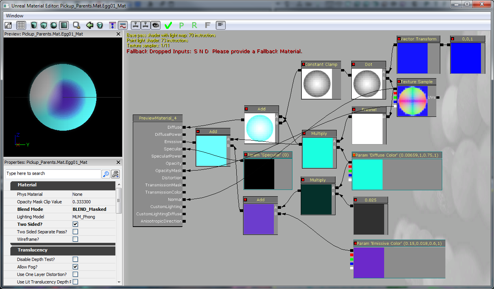
蛋的爆炸粒子是快速的火焰（150的柔光缩放，持续0.2秒）及一些抗水的外射的火花（使用速度/生命周期来达到此要求）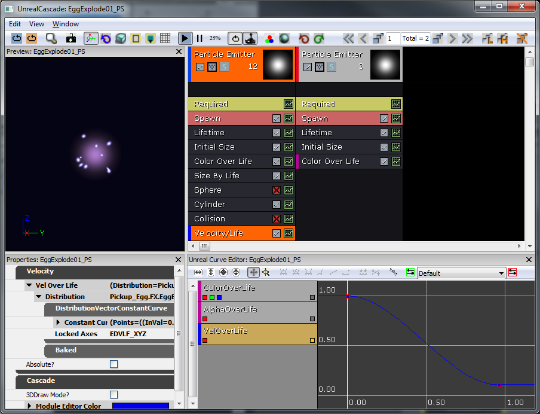
/*
* Copyright ⓒ 2009 Psyonix Studios. All Rights Reserved.
*
* This is the main egg class. They are used to collect points for the player
*/
class EggPickup extends AquaPickupable;
// Tell the player that we were picked up and the player should earn some points
function OnPickup(AquaPlayerController Player)
{
Player.OnEarnedPoints();
}
DefaultProperties
{
// Specify the static mesh to use
Begin Object Name=StaticMeshComponent0
StaticMesh=StaticMesh'Pickup_Egg.SM.Egg01'
End Object
// Specify the particle effect to play when picked up
Begin Object Name=PickupEffect0
Template=ParticleSystem'Pickup_Egg.FX.EggExplode01_PS'
End Object
}
障碍
游戏中增加障碍是为了使游戏中救出所需的Fizzle更加有挑战性。 玩家为了达到关卡的特殊地方必须破墙。 为了让破墙效果看起来酷一点，我们会用碎片网格创建这些障碍。 可被破坏的障碍由单个碎片网格实例化来形成墙壁。 创建是由数量设置为24块的碎片工具创建的，其余设置均为默认。 为在代码中实施它们，我们将存在的AquaFractureMeshActor分子类并指定网格。 因为这些障碍除了作为障碍物外不会真正影响游戏，不需要其他代码。
为在代码中实施它们，我们将存在的AquaFractureMeshActor分子类并指定网格。 因为这些障碍除了作为障碍物外不会真正影响游戏，不需要其他代码。
/*
* Copyright ⓒ 2009 Psyonix Studios. All Rights Reserved.
*/
class AquaFractureBarrier extends AquaFractureMeshActor;
DefaultProperties
{
Begin Object Name=FracturedStaticMeshComponent0
StaticMesh=FracturedStaticMesh'World_Coral.SM.Coral01_FRAC'
End Object
}
水流
为了更好地调整环境，我们决定在水中增加水流，这会使角色向任何他们飘移的方向移动。 这些水流通过增加粒子向玩家展现。 网格是按照预定路径的曲线表。 我制作了带平移噪声的材质来扭曲背景并创建水流的可视线索。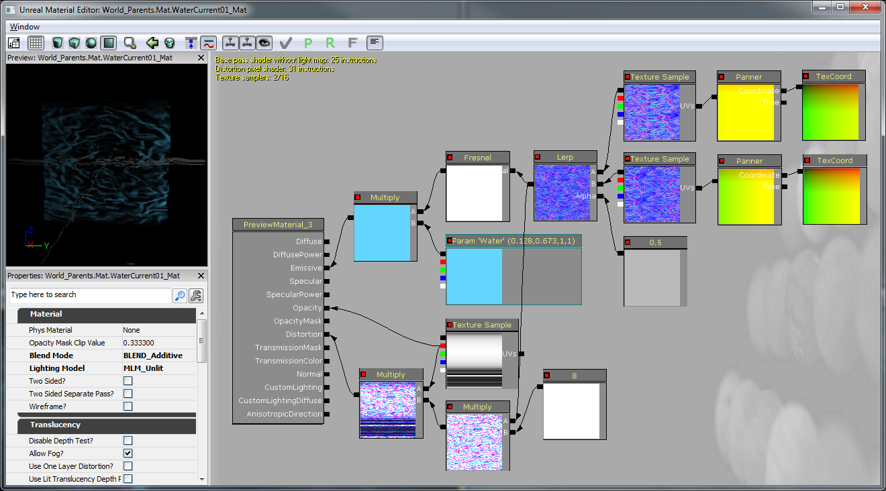
水流在编辑器中通过一行SplineActors来呈现。 这些SplineActors按照可通过关卡的路径来创建。 该路径将被我们用来作为水流的流动方向。 为水流设置样条曲线路径是容易的。 在我的水流的开始处，我直接复制样条曲线(ALT+拖动)到路径 ，使之有足够的分辨率来追溯周围几何体的曲线。 路径本身在复制时是自动关联的（方向应正确）。 为使增加到角色上的力全部在一个位置，我们把水流功能添加到UpdateCurrentForces(...)的AquaBall中。 这在Tick(...)内被调用来检查玩家是否目前正在SplineActor附近，如果是的话，则在样条曲线处施加力。 另外，因为我们在每次更新时寻找最近的SplineActor，把关卡中的SplineActor缓存进CurrentCache时有一个最优化的小技巧。 为使水流感觉上更有流动的感觉，当重力受水流影响时，重力被取消。
// True if the ball is currently being pushed by a current
var bool bStuckInCurrent;
// Multiplier for how fast currents will push the character
var() float CurrentPushAmount;
// Initialize any variables that we might need for later
// This is called right before the ball is registered for input
// So a good place to look for objects in the level
simulated function InitializeVariables()
{
local AquaFractureMeshActor Barrier;
local SplineActor Current;
foreach WorldInfo.DynamicActors( class'AquaFractureMeshActor', Barrier)
{
BarrierCache.AddItem( Barrier );
}
// Add each spline actor and make sure the list variables are set up correctly
foreach WorldInfo.DynamicActors( class'SplineActor', Current )
{
CurrentCache.AddItem( Current );
Current.NextOrdered = Current.GetBestConnectionInDirection(vect(0,0,-1));
if(Current.NextOrdered != none)
{
Current.NextOrdered.PrevOrdered = Current;
}
}
}
// If the ball is near a SplineActor - we want to use this system
// for sending the player through a water current
// set bStuckInCurrent to true if player was affected by current, false otherwise
simulated function UpdateCurrentForces(float DeltaTime)
{
local SplineActor S, BestSplineActor, NextSplineActor;
local float BestDistance;
local float DotProduct;
local vector ForceDirection;
BestDistance = 100000;
// Look for the closest SplineActor
foreach CurrentCache( S )
{
if( VSize( Location - S.Location ) < BestDistance )
{
BestSplineActor = S;
BestDistance = VSize( Location - S.Location );
}
}
// If we're close enough to a SplineActor to be influenced by it... then allow it to push
if( BestDistance < 300 )
{
// If there's a part of the world in the way, then don't allow the current to affect us
if(!FastTrace( BestSplineActor.Location, Location))
{
return;
}
// Find the next spline actor to push toward
NextSplineActor = BestSplineActor.NextOrdered;
// The last spline actor won't push us, so always add one at the end in the direction the player should be pushed out
if(NextSplineActor == none)
return;
// Figure out if the character is currently behind or ahead of the Best spline actor
if(NextSplineActor != none)
DotProduct = Normal(Location - BestSplineActor.Location) dot Normal(NextSplineActor.Location - BestSplineActor.Location);
// If they're ahead of the Best spline actor, then go along the spline towards the next spline actor
if(DotProduct > 0)
{
if(NextSplineActor != none) ForceDirection = Normal(BestSplineActor.FindSplineComponentTo(NextSplineActor).GetLocationAtDistanceAlongSpline(BestDistance + 96) - Location);
}
// otherwise, go straight to the closest spline actor
else
{
ForceDirection = Normal(BestSplineActor.Location - Location);
}
// Finally add the force in the direction we determined with the speed multiplier CurrentPushAmount
StaticMeshComponent.AddImpulse(ForceDirection * CurrentPushAmount * DeltaTime);
bStuckInCurrent = true;
return;
}
bStuckInCurrent = false;
}
// Update the character's push forces every Tick and rotation
simulated event Tick(float DT)
{
super.Tick(DT);
// Add a force if player is near a Current
UpdateCurrentForces( DT );
if(!bStuckInCurrent)
{
// Do Gravity
AddGravityForce( DT );
}
// Do Input Push
AddInputForce( DT );
}
可破坏的牢笼中的Fizzle
现在就是将真正的Fizzle放入可破坏的牢笼的好时机，这样对玩家来说解救它们才说得通。 默认情况下，Fizzle会有一段害怕的动画。 但我们也希望在它们被从笼中解救出来后，会有庆祝的动画。 被关在笼中的Fizzle和主角的建模一样，但这个模型有骨架绑定的尾迹，因为我们想要手工动画化尾迹。 只需给他创建两种动画一一种是空闲时的“害怕”动画，还有一种是他庆祝时的游开的动画。 为他创建新的动画树并且他的动画被设置为类似于主角的动画树。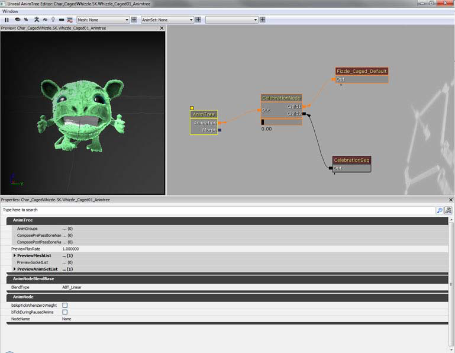
我们会把Fizzle作为SkeletalMeshActor的子类放在笼中，并在BreakableCageAndFizzle actor生成时生成Fizzle. 那样的话，当笼子被破坏时，它可告知被关的Fizzle开始庆祝。 为了播放庆祝的动画，我们需要找到PostInitAnimTree(...)的AnimTree的CelebrationNode和CelebrationSeq节点。 然后当时间正确时，PlayCheer()被调用来混合进动画来欢呼。 CelebrationSeq将标识bCauseActorAnimEnd设置为true，这样当结束播放时会调用事件OnAnimEnd(...)。 这样我们就知道什么时候来取消CagedFizzle状态。
/*
* Copyright ⓒ 2009 Psyonix Studios. All Rights Reserved.
*
* The captured fizzle that is stuck inside the cage
*/
class CagedFizzle extends SkeletalMeshActorSpawnable;
// Animation stuff
var AnimNodeBlend CelebrationNode;
var AnimNodeSequence CelebrationSeq;
// Set up the anim nodes
simulated event PostInitAnimTree(SkeletalMeshComponent SkelComp)
{
super.PostInitAnimTree(SkelComp);
// Find the CelebrationNode by name in the AnimTree
CelebrationNode = AnimNodeBlend(SkelComp.FindAnimNode('CelebrationNode'));
// Find the CelebrationSeq by name in the AnimTree
CelebrationSeq = AnimNodeSequence(SkelComp.FindAnimNode('CelebrationSeq'));
// Reset the CelebrationNode to off just in case it was left on in the editor by accident
CelebrationNode.SetBlendTarget(0.0f, 0.0f);
}
// Start the cheering animation and play the sound
function BeginCageBreakout()
{
PlayCheer();
}
// Play animation of captured Fizzle cheering
function PlayCheer()
{
// Blend in the animation that is connected to CelebrationNode
CelebrationNode.SetBlendTarget(1.0f, 0.2f);
// Set the animation to start at the beginning (time = 0.0f)
CelebrationSeq.SetPosition(0.0f, false);
// Play the celebration animation!
CelebrationSeq.PlayAnim( false, 1.0f, 0.0f);
}
// when the animation ends, we should stop cheering and destroy this guy
function StopCheer()
{
CelebrationNode.SetBlendTarget(0.0f, 0.2f);
Destroy();
}
// After cheering we should stop cheering and destroy
event OnAnimEnd(AnimNodeSequence SeqNode, float PlayedTime, float ExcessTime)
{
if(CelebrationSeq == SeqNode)
{
StopCheer();
}
}
DefaultProperties
{
Begin Object Name=SkeletalMeshComponent0
Animations=None
AbsoluteRotation=true
Materials[0]=MaterialInstanceConstant'Char_CagedWhizzle.Mat.Whizzle_Caged01_MIC'
SkeletalMesh=SkeletalMesh'Char_CagedWhizzle.SK.Whizzle_Caged01_SK'
AnimSets.Add(AnimSet'Char_CagedWhizzle.SK.Whizzle_Caged01_Animset')
PhysicsAsset=PhysicsAsset'Char_Whizzle.SK.Wizzle01_Physics'
AnimTreeTemplate=AnimTree'Char_CagedWhizzle.SK.Whizzle_Caged01_Animtree'
bHasPhysicsAssetInstance=true
bUpdateKinematicBonesFromAnimation=true
PhysicsWeight=0.0f
BlockRigidBody=false
CollideActors=false
BlockActors=false
BlockZeroExtent=false
BlockNonZeroExtent=false
RBChannel=RBCC_GameplayPhysics
RBCollideWithChannels=(Default=true,BlockingVolume=true,EffectPhysics=true,GameplayPhysics=true)
RBDominanceGroup=30
DepthPriorityGroup=SDPG_Foreground
LightingChannels=(Dynamic=TRUE,Gameplay_1=TRUE)
Rotation=(Yaw=0)
Scale=1.0f
End Object
Components.Add(SkeletalMeshComponent0)
}

{kind=link}
{kind=link}
{kind=link}
{kind=link}
{kind=link}
{kind=link}